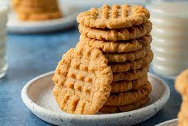

Peanut Butter Cookies

Description
These Peanut Butter cookies are an all-time favorite of mine. This recipe will show you how to quickly make these delicous cookies with less than 10 ingredients!
Below are the ingredients and steps that you need to take to make these cookies!
Ingredients
- 1 1/2 cup of Flour, 180g
- 1/2 cup of Butter, unsalted 113g
- 1 cup of Peanut Butter, 250g
- 1/2 cup of Brown Sugar, 100g
- 1/2 cup of Sugar, 100g
- 1 tsp of Vanilla Extract, 5mL
- 1 Egg, large
- 3/4 tsp of Baking Powder, 3g
Steps
- Preheat oven to 350F.
- Sift the flour and baking powder together into a large bowl, then whisk to combine.
- Cream the butter, sugar, and brown sugar in a stand mixer fitted with a paddle attachment. Then, add the peanut butter and mix until fully incorporated.
- Add and mix in the egg and vanilla extract. Now, scrape the bowl down and mix once more.
- Add the flour mixture(step 2) into the stand mixer with everything else and beat on low until incorporated.
- Roll the cookie dough into one inch balls and place on a baking sheet lined with parchment paper.
- Flatten the cookie dough balls with a fork into a criss-cross pattern. Bake the cookies for about 8 minutes or until edges are golden brown.
- Allow cookies to cool completely on baking sheet until they are firm and set up completely. Then transfer them to wire rack or plate and enjoy!